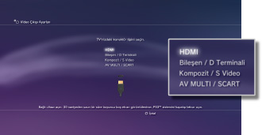
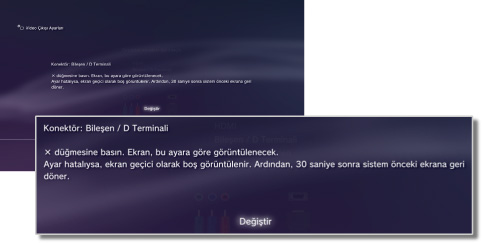
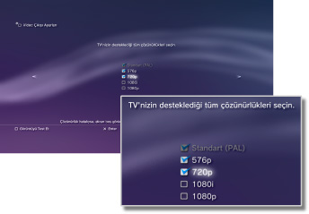
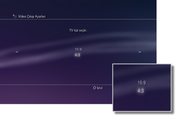
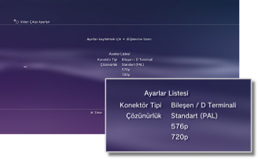

Video Çıkışı Ayarları
Sistemin video çıkış ayarlarını yapar. Kullanılmakta olan TV için en iyi çıkışı seçin.
1. |
TV'nizin desteklediği çözünürlüğü kontrol edin.
Çözünürlük (video modu) TV türüne göre değişir. Ayrıntılar için, TV ile verilen yönergelere bakın.
|
2. |
 (Ayarlar) > (Ekran Ayarları) öğesini seçin. (Ayarlar) > (Ekran Ayarları) öğesini seçin.
|
3. |
[Video Çıkışı Ayarları] öğesini seçin.
|
4. |
TV'nizin konektör türünü seçin.
Çözünürlük (video modu) kullanılan konektör türüne göre değişir.

| Kablo türü |
TV'deki giriş konektörü |
Desteklenen video modları *1 |
HDMI Kablosu (ayrıca satılır)
 |
HDMI
 |
NTSC: 1080p / 1080i / 720p / 480p
PAL: 1080p / 1080i / 720p / 576p |
AV Kablosu Bileşeni (ayrıca satılır)

D-Terminali Kablosu (ayrıca satılır)
 |
Bileşen

D Terminali *2
 |
NTSC: 1080p / 1080i / 720p / 480p / 480i
PAL: 1080p / 1080i / 720p / 576p / 576i |
AV Kablosu (ürünle verilir)

S VIDEO Kablosu (ayrıca satılır)
 |
Kompozit

S Video*3
 |
NTSC: 480i
PAL: 576i |
AV MULTI Kablosu (ayrıca satılır) ［VMC-AVM250］ (Sony Corporation ürünü)

AV Kablosu (ürünle verilir)
Avrupa-AV Konektörü Fişi (ürünle verilir) *4
 |
AV MULTI*5

SCART*6
 |
NTSC: 480p / 480i
PAL: 576p / 576i |
| *1 |
Video modu seçenekleri PS3™ sisteminin satın alındığı bölgeye göre değişir. Kuzey Amerika, Asya ve diğer NTSC bölgelerde, 480i video modu [Standart (NTSC)] olarak görüntülenir. Avrupa'da ve diğer PAL bölgelerinde, 576i video modu [Standart (PAL)] olarak görüntülenir. Ayrıntılar için, ürünle verilen yönergelere bakın.
|
| *2 |
D-terminali genel olarak Japonya'da kullanılan bir konektör türüdür. D1 ila D5 tarafından desteklenen çözünürlükler şu şekildedir:
D5: 1080p / 720p / 1080i / 480p / 480i
D4: 1080i / 720p / 480p / 480i
D3: 1080i / 480p / 480i
D2: 480p / 480i
D1: 480i
|
| *3 |
S VIDEO, genel olarak Japonya'da kullanılan bir formattır.
|
| *4 |
Avrupa-AV konektörü fişi yalnızca Avrupa'da satılan PS3™ sistemleriyle verilir.
|
| *5 |
AV MULTI, genel olarak Japonya'da kullanılan bir formattır. [AV MULTI / SCART] seçilirse, çıkış sinyali türünü seçmenizi sağlayan ekran görüntülenecektir.
|
| *6 |
SCART, genel olarak Avrupa'da kullanılan bir formattır. [AV MULTI / SCART] seçilirse, çıkış sinyali türünü seçmenizi sağlayan ekran görüntülenecektir.
|
|
5. |
3D TV görüntüleme boyutunu ayarlayın.
Sistemi kullandığınız TV'nin ekran boyutuyla eşleşecek şekilde ayarlayın.
Kullandığınız TV bir 3D TV değilse veya adım 4'te [HDMI] öğesini seçmediyseniz, bu ekran görüntülenmez.
|
6. |
Video çıkış ayarlarını değiştirin.
Video çıkışı için çözünürlüğü değiştirin. Adım 4'te seçilen konektör türüne göre bu ekran görüntülenmeyebilir.

|
7. |
Çözünürlüğü ayarlayın.
Kullanılan TV tarafından desteklenen tüm çözünürlükleri seçin. Video otomatik olarak seçili çözünürlükler arasından oynatmakta olduğunuz içerik için mümkün olan en yüksek çözünürlükte çıkar.*
* Video çözünürlüğü öncelik sırasına göre şu şekilde seçilir: 1080p > 1080i > 720p > 480p/576p > Standart (NTSC:480i/PAL:576i).
Adım 4'te [Kompozit / S Video] seçilirse, çözünürlükleri seçme ekranı görüntülenmez.
[HDMI] seçilirse, çözünürlüğü otomatik olarak ayarlamayı da seçebilirsiniz (HDMI aygıtı açılmalıdır). Bu durumda, çözünürlükleri seçmek için ekran görüntülenmez.

|
8. |
TV türünü ayarlayın.
Kullanılan TV'nin türünü seçin. Adım 4'te [Kompozit / S Video] veya [AV MULTI / SCART] seçildiğinde yalnızca SD çözünürlüğü (NTSC:480p / 480i, PAL: 576p / 576i) çıkarılacağı zaman ayarlayın.

|
9. |
Ayarlarınızı kontrol edin.
Görüntülenen görüntünün TV için doğru çözünürlük olduğunu onaylayın. Bir önceki ekrana geri dönebilir ve  düğmesine basarak ayarları gözden geçirebilirsiniz. düğmesine basarak ayarları gözden geçirebilirsiniz.

|
10. |
Ayarlarınızı kaydedin.
Video çıkış ayarları PS3™ sistemine kaydedilir. Ses çıkış ayarlarını ayarlamaya devam edebilirsiniz. Ses çıkışı hakkında ayrıntılar için, bu kılavuzdaki (Ayarlar) >  (Ses Ayarları) > [Ses Çıkış Ayarları] konusuna bakın. (Ses Ayarları) > [Ses Çıkış Ayarları] konusuna bakın.
|
İpuçları
- Video çıkış ayarları kullanılan TV'de gerekenle eşleşmiyorsa, çözünürlük değiştirildiğinde ekran kararabilir. Ancak ekran bir süre sonra otomatik olarak orijinal çözünürlüğüne geri döner. Ekran 30 saniyeden fazla kararmış halde kalırsa sistemi kapatın. Sonra, sistemi tekrar açmak için en az beş saniye sistemin önündeki güç düğmesine dokunun. Video çıkış ayarları otomatik olarak standart çözünürlüğe sıfırlanır.
- HDCP (High-bandwidth Digital Content Protection) standardıyla uyumlu olmayan bir aygıt bir HDMI kablosu kullanılarak sisteme bağlanırsa video ve/veya ses sistemden çıkarılamaz.
- Blu-ray Disc içindeki telif hakkı korumalı içerik HDCP standardıyla uyumlu bir aygıta bağlı HDMI kablosu kullanılırken yalnızca 1080p'de çıkarılabilir.
- PS3™ sistemi (CECH-3000 / 4000 serisi) TV'ye bir D-terminali kablosu, bir AV kablosu bileşeni veya bir çoklu AV kablosu (Sony Corporation ürünü) kullanılarak bağlandığında, analog yüksek tanımlı çıkış Blu-ray™ (AACS (Advanced Access Content System)) tarafından kullanılan telif hakkı koruma teknolojisiyle uyumlu olacak şekilde kısıtlanmıştır. BD video yazılımı (BD-ROM) ve telif hakkı korumalı içerik (yayın programları gibi) ile kaydedilmiş BD'ler 480i'de çıkarılır.
- BD video yazılımı (BD-ROM) ve telif hakkı korumalı video içeriği olan BD'ler çıkarmak için sistemi (CECH-4200 serisi veya üstü) bir HDMI kablosu kullanarak bağlayın.